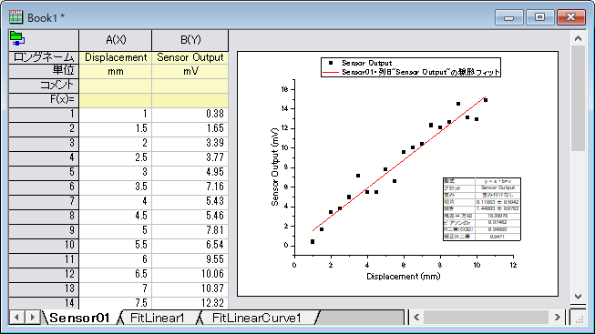
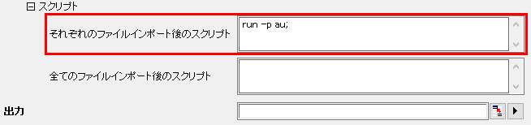
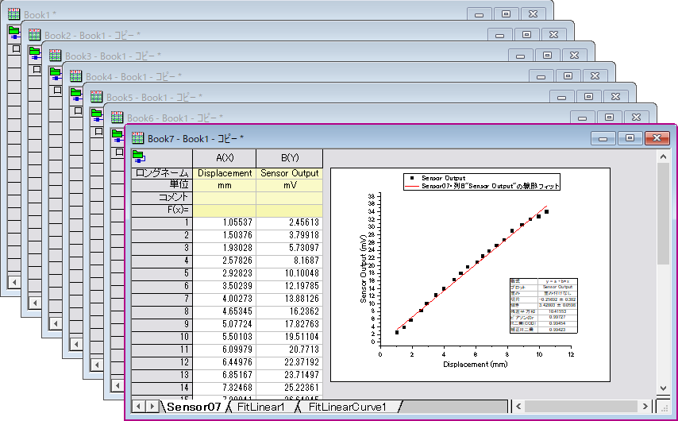

アクティブなワークブックからクローン複製されたワークブックに複数のファイルをインポート
Import-Multi-Clone
概要
Originには、アクティブなワークブックでのインポートおよび分析操作を簡単に「複製」する方法があります。この強力な機能を使用すると、ボタンを数回クリックするだけで、複数のファイルをすばやく処理できます。
この機能は、ASCII、CSV、Excelなど、Originでサポートされているほとんどのインポートファイルタイプに実装されており、従来のXファンクションベースのルーチン（データ：ファイルからインポート）または、新しいデータコネクタ（データ：ファイルに接続）で機能します。 このチュートリアルでは、新しいコネクタ機能を使用しますが、従来のXファンクションベースのインポートルーチンでも基本的に同じ方法です。
学習する項目
このチュートリアルでは、以下の項目について解説します。
- 原型となるワークブックを作成する
- 類似のデータファイルを複数インポートして分析し、ブックのクローンを作成
クローン複製されたワークブックに複数のASCII ファイルをインポート
原型となるワークブックを作成する
このサンプルでは、ファイルをインポートして、散布図を作成し、線形フィットの操作行います。その後、フィット結果のグラフをワークブックに埋め込みます。
- 新しいプロジェクトを開始します。メニューからデータ：ファイルに接続： Text/CSVを選択します。
- <Origin インストールフォルダ>\Samples\Curve Fitting\ フォルダのSensor01.dat を選択します。
- CSVインポートオプションダイアログの設定はデフォルトのままにして、 OKをクリックします。データファイルがワークシートに接続されます。
- B列のヘッダをクリックして選択し、散布図ボタンをクリックします。
- 列B (Sensor Output)を強調表示し、作図：2D: 散布図：散布図 を選択して散布図をプロットします。
- X軸をダブルクリックして、軸ダイアログを開きます。スケールタブを開き、CTRLキーを押しながら左パネルの水平方向と垂直方向をクリックして選択します。再スケールを自動に設定して、OKをクリックします。
- メニューから解析：フィット：線形フィットと選択して線形フィットダイアログを開きます。再計算を自動（任意--ヒントを確認）にして、OKをクリックしてフィットを実行します。確認メッセージで「いいえ」を選択してOKをクリックします。
- ワークシートのSensor01右側の灰色の領域を右クリックして、グラフを追加:[Graph1]を選択します。線形フィット結果付きの散布図がSensor01上に追加されます。
- 
 | ステップ7で、再計算モードを自動に設定しました。Origin 2018b以降では、複製されたインポートで自動的に再計算を開始するため、この手順は不要です。以前のバージョンのOriginのASCIIインポートダイアログボックスでは、ASCIIダイアログボックスのそれぞれのファイルインポート後のスクリプトボックス（スクリプトの項目下）の後に以下のスクリプト行を入力することで、同じ動作を呼び出すことができます。
run -p au;
- 
|
複数のファイルをインポートしワークブックのクローンを作成して分析を実行
ここでは、複数のSensorデータファイルをインポートすることにより、グラフ化や線形フィットなど、Book1に関連するすべての操作を「複製」します。
- Book1をアクティブにして、インポートツールバーのクローンインポートボタン
 をクリックします。
をクリックします。
- Curve Fittingフォルダを開き、SHIFT あるいは CTRLキーを使ってSensor02.dat からSensor07.datを選択し、ファイルの追加をクリックしてOKをクリックします。全ファイルが処理されて、各シートに埋め込まれた結果のグラフにはフィット曲線が表示されます。
- 